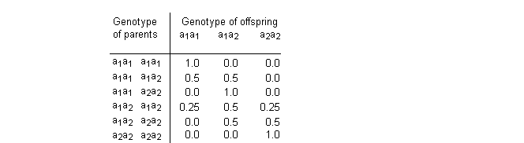

![[pigs0]](pigs0.bmp) Pigs: genetic counseling and
Pigs: genetic counseling and
pedigree analysis
Spiegelhalter (1990) uses exact methods to analyse a small pedigree. This pedigree was previously used by Cannings and Thompson (1981) to illustrate their 'peeling' procedure to provide likelihoods for gene frequencies and probabilities for individuals being affected or carriers. We assume the pedigree refers to pigs which have the possibility of carrying a recessive gene: thus each pig has a genotype a
1
a
1
, a
1
a
2
or a
2
a
2
, in which only those with a
2
a
2
are affected with the trait, while those with a
1
a
2
are carriers of the defective allele a
2
. We assume that Ian (the consequence of a mating between Fred and his Aunt Clare) is yet to be born, and all that is known is that Fred's niece Jane has the trait. We wish to estimate the prevalence p of the allele a
2
, and predict the chance of Ian being affected. The conditional probability distributions are as follows. For the genotype of the founder nodes Ann, Brian, Eric and Henry we assume a binomial distribution
Founder ~ Binomial(q, 2)
where Founder takes values 0, 1 or 2 for genotypes a
2
a
2
, a
1
a
2
and a
1
a
1
respectively, and q = 1
-
p is the prevalence of the allele a
1
. This is equivalent to assuming Hardy Weinberg equilibrium, giving P(a
1
a
1
) = q
2
, P(a
1
a
2
) =2 q (1
-
q) , P(a
2
a
2
) = (1
-
q)
2
.
For the genotype of offspring we have the standard Mendelian inheritance probabilities given by the following table.

For a recessive gene the genotype-to-phenotype penetrance probabilities are given by:
The necessary inheritance probabilities are read in from the data file as an array
BUGS code for Pigs model:
model
{
q ~ dunif(0,1) # prevalence of a1
p <- 1 - q # prevalence of a2
Ann1 ~ dbin(q,2); Ann <- Ann1 + 1 # geno. dist. for founder
Brian1 ~ dbin(q,2); Brian <- Brian1 + 1
Clare ~ dcat(p.mendelian[Ann,Brian,]) # geno. dist. for child
Diane ~ dcat(p.mendelian[Ann,Brian,])
Eric1 ~ dbin(q,2)
Eric <- Eric1 + 1
Fred ~ dcat(p.mendelian[Diane,Eric,])
Gene ~ dcat(p.mendelian[Diane,Eric,])
Henry1 ~ dbin(q,2)
Henry <- Henry1 + 1
Ian ~ dcat(p.mendelian[Clare,Fred,])
Jane ~ dcat(p.mendelian[Gene,Henry,])
A1 ~ dcat(p.recessive[Ann,]) # phenotype distribution
B1 ~ dcat(p.recessive[Brian,])
C1 ~ dcat(p.recessive[Clare,])
D1 ~ dcat(p.recessive[Diane,])
E1 ~ dcat(p.recessive[Eric,])
F1 ~ dcat(p.recessive[Fred,])
G1 ~ dcat(p.recessive[Gene,])
H1 ~ dcat(p.recessive[Henry,])
I1 ~ dcat(p.recessive[Ian,])
J1 ~ dcat(p.recessive[Jane,])
a <- equals(Ann, 2) # event that Ann is carrier
b <- equals(Brian, 2)
c <- equals(Clare, 2)
d <- equals(Diane, 2)
e <- equals(Eric, 2) ;
f <- equals(Fred, 2)
g <- equals(Gene, 2)
h <- equals(Henry, 2)
for (J in 1:3) {
i[J] <- equals(Ian, J) # i[1] = a1 a1
# i[2] = a1 a2
# i[3] = a2 a2 (i.e. Ian affected)
}
}
Data
( click to open )
Inits for chain 1
Inits for chain 2
( click to open )
Results
Time for 100000 updates 18s on 200MHz Pentium Pro. A 10000 update burn in followed by a further 100000 updates gave the parameter estimates
![[pigs3]](pigs3.bmp)
We note a number of important tricks. First, each genotype is a 3-valued categorical variable with conditional probabilities either determined by the binomial (Hardy-Weinberg equilibrium) distribution (for founder nodes) or from the Mendelian inheritance probabilities which are stored as a 3-dimensional array
p.mendelian
. In the latter case, the genotype of the parents picks which row of the matrix is used for the distribution. However, the rows of this matrix are indexed by values 1, 2 or 3, whilst the genotypes of the founder nodes take values 0, 1 or 2. Since BUGS does not allow subscripts to be functions of variables, we must first add 1 to the genotype of the parents (for example,
Ann = Ann1 + 1
) and use these new variables as subscripts to the matrix
p.mendelian
. The genotype-to-phenotype distribution is handled similarly in a matrix
p.recessive
. Second, the
equals
function
equals(Ann, 2)
allows the calculation of P(Ann's genotype = 2) (i.e. a carrier), whilst
equals(Ian, J)
calculates P(Ian's genotype = J), where J=3 implies that Ian is affected.